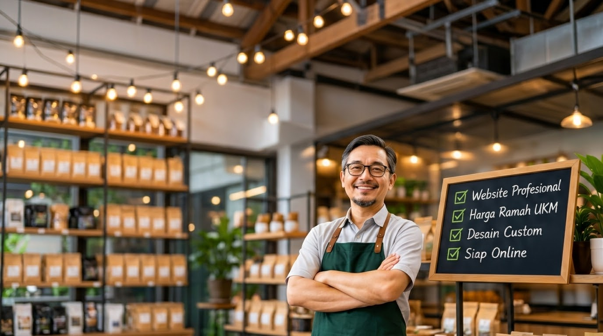
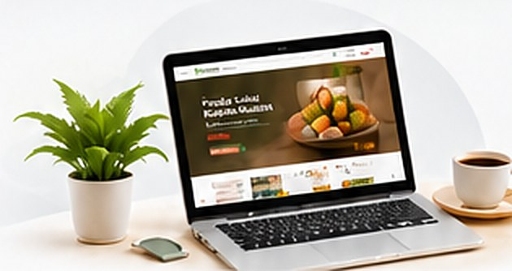
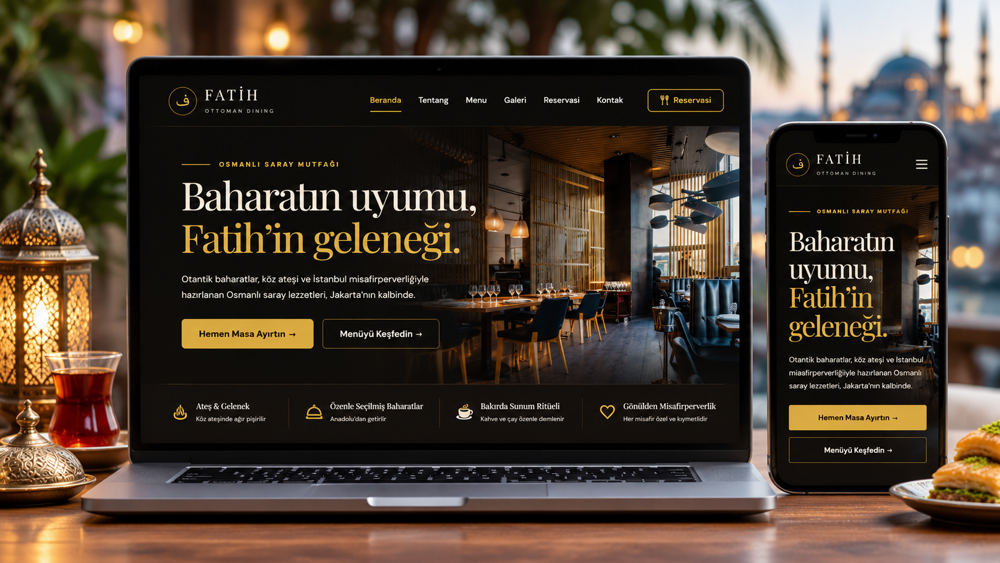
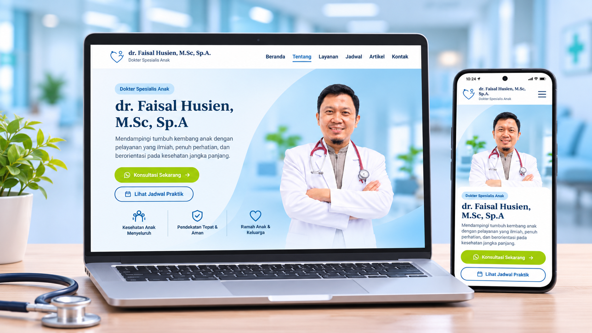
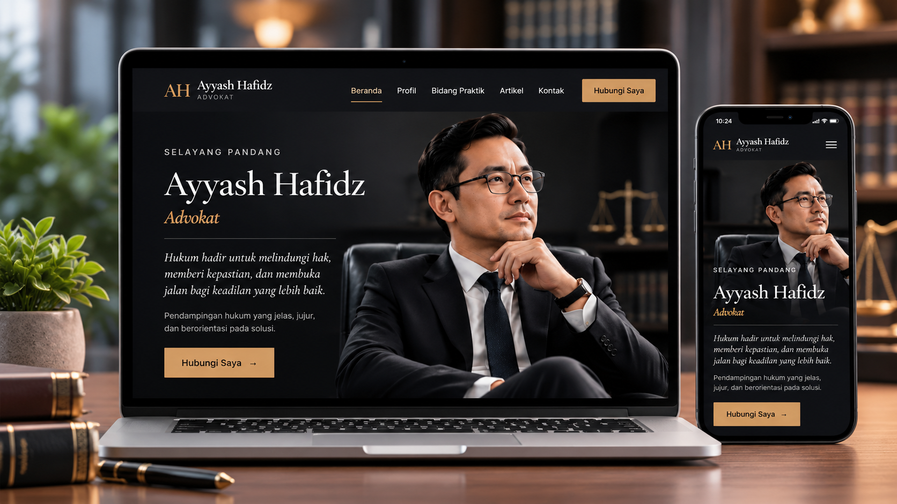
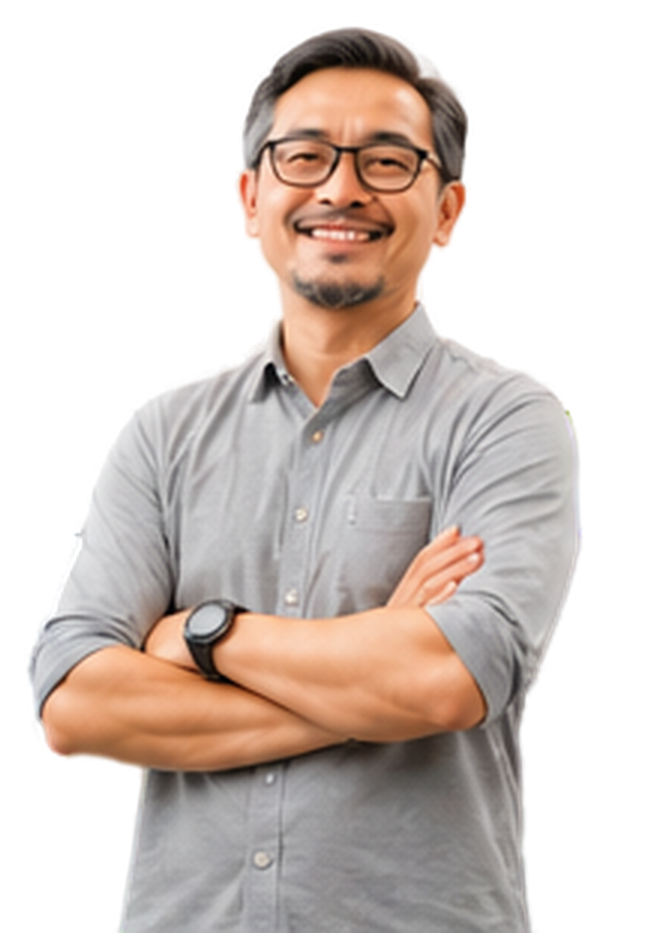

Mobile-first responsive
Nyaman dibuka dari HP maupun desktop.
WEBSITE PROFESIONAL UNTUK UMKM
Kami membantu UMKM memiliki website profesional, mobile-first, dan Custom sesuai style binis Anda, tanpa menguras budget tentunya


Kalau kamu pengusaha UMKM dan pengen punya website profesional yang bisa membantu mengenalkan bisnis dan produk kamu, tapi terkendala budget, kamu sudah tepat di sini.
Banyak yang bilang website itu tidak perlu karena kita sudah punya sosial media yang menjelaskan produk dan bisnis kita.
Padahal website tidak bisa digantikan sepenuhnya oleh media sosial. Website bukan sekadar kanal untuk menjelaskan bisnis, tetapi juga berfungsi sebagai business identity.
Hai, panggil saja saya
Nyaman dibuka dari HP maupun desktop.
Desain profesional dan ringan.
1 tahun dengan nama bisnis Anda.
Bukan WordPress.
Fondasi optimasi mesin pencari.
Mudah dihubungi calon pelanggan.
Memudahkan pelanggan mengirim pesan.
Diskusikan kebutuhan website bisnis kamu.
DARI IDE MENJADI ONLINE
Kami menggunakan 10 langkah kerja agar proses transparan dan kamu tahu kapan perlu memberi persetujuan.
Mulai dengan menghubungi tim Maximus.
Bahas target website, audiens/market, dan kebutuhan struktur.
Klien mengisi brief melalui tools yang kami siapkan.
Menyiapkan materi, teks, foto, dan informasi bisnis.
Menyusun arah visual dan struktur halaman website.
Klien meninjau rancangan sebelum masuk tahap berikutnya.
Website dibangun sesuai brief dan desain yang disetujui.
Pengecekan tampilan, fungsi, dan responsivitas.
Klien memeriksa hasil akhir sebelum website dipublikasikan.
Website dipublikasikan dan diserahkan kepada klien.
Beberapa hasil karya website untuk para UKM dan Profesional

Kategori Kuliner

Kategori Personal

Kategori Personal
Harga mengikuti jenis paket dan kebutuhan website. Silakan konsultasi untuk mendapatkan rincian penawaran.
Kami akan mengerjakan dalam waktu maksimal 3x24 jam bergantung ppada antrian pekerjaan.
Fasilitas domain sudah termasuk selama 1 tahun. Perpanjangan tahun depan menyesuaikan harga dari provider.
Ya. Arah desain disesuaikan dengan karakter bisnis dan target audiens.
Ya. Website dirancang responsif agar nyaman digunakan di HP, tablet, dan desktop.
Tidak. Website dibuat custom demgan coding dari awal.
Pengaturan perubahan konten setelah publish dapat menghubungi admin
SIAP MEMULAI?
Ceritakan kebutuhan bisnismu. Kita diskusikan solusi website yang paling sesuai.
Konsultasi Online